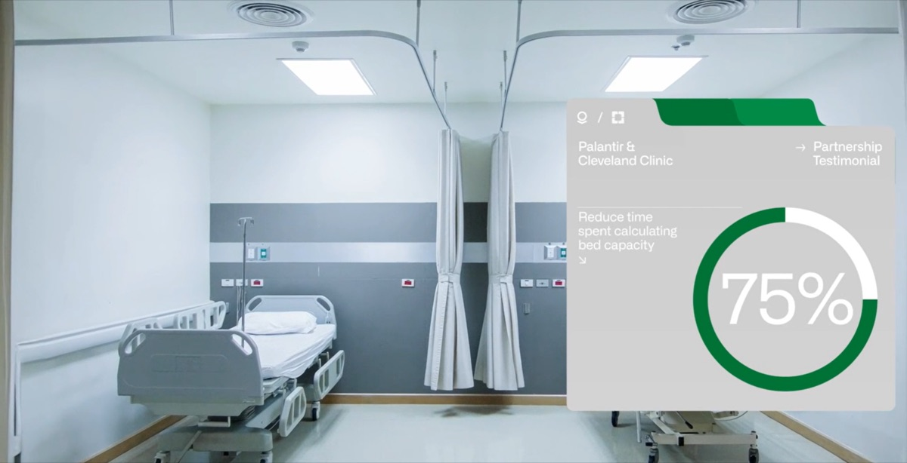
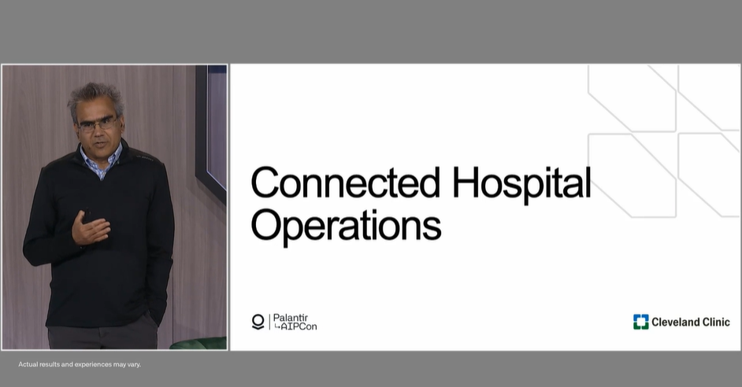
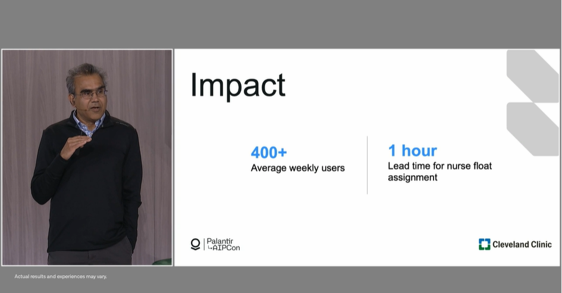

克利夫兰医学中心 / Palantir

在过去几年中，Palantir 的独特之处在于，它不仅愿意，而且实际上非常热衷于解决最棘手的问题，而不是向我们推销现成的解决方案。这不仅表现为他们愿意，更是迫切地希望与我们并肩工作，花时间去了解医疗行业，了解我们的需求、流程和文化，然后从零开始，真正基于第一性原理来开发解决方案。
Capacity Management
Challenge
Efficient, effective hospital operations and patient care require ongoing optimization of patient, staff, and equipment distribution and coordination, which becomes increasingly challenging as healthcare organizations expand. As of 2023, Cleveland Clinic has an extensive network encompassing 23 hospitals, 275 outpatient locations, over 6,600 beds, and 19,000 nurses and advanced practice providers – all of which generate high volumes of data that must be continuously coordinated and assessed. In 2022 alone, there were 303,000 hospital admissions and observations, and 270,000 surgeries and procedures throughout Cleveland Clinic’s health system.

Historically, Cleveland Clinic’s bed management and staffing data was hosted in a variety of systems that provided insights into siloed components of its complex healthcare ecosystem. Although these point solutions effectively targeted certain challenges, few were able to drive meaningful operational impact, leaving caregivers on the floor reliant on manual processes.
Solution
“As a doctor, when we’re able to improve efficiency, we’re able to spend more time at the bedside with each of our individual patients, which is the reason I went into medicine.”
— Amy Teleron, MD, Physician Lead, Medical Operations, Dept. of Hospital Medicine, Cleveland Clinic
The vision of a connected hospital is to enable operators on the ground to see both a real-time reflection of and projected demand for patient beds on the hospital floor, and to act based on this information. The Hospital 360 module helps to achieve this goal by bringing data to the forefront of bed-planning decisions, allowing decision-makers on the ground to proactively plan nursing and bed management. Combining this information with staffing insights enables earlier and enhanced visibility into bed demand across the hospital, which ultimately allows for increased admission of transfer patients, and a decrease in ED and PACU hold times.

Rohit Chandra, Chief Digital Officer, Cleveland Clinic, speaks at Palantir AIPCon June 2023
Impact
75% reduction in time spent calculating bed capacity
>10% increase in daily hospital transfer admissions
20% increase in time efficiency assigning beds after transfer requests
~1-hour decrease in daily ED hold time per patient
Staffing
Challenge
Nursing shortages have presented operational and care challenges across the healthcare industry. Balancing patient loads across staff is essential to maintaining high-quality care. Traditionally, this coordination required multiple nursing managers spending several hours a day in spreadsheets and on phone calls between units.
This manual schedule balancing is heavily administrative and time-consuming and cannot account for the projected patient census or care needed.
Solution
“[With] the projections that Palantir offers, we can look at our core number of nurses that are scheduled on every shift for a six-week period. This system allows me to see all of our units as a whole, so then I can easily look through all of them and make that collective decision.”
— Kristen Vargo, DNP, RN, Director of Nursing, Neurological, Orthopaedic, Rheumatology Institutes, Cleveland Clinic
Proactive Staffing: Putting both patient care and nurse satisfaction at the center of the iterative process, Palantir and Cleveland Clinic took a bedside-out approach to build new tooling to staff units earlier, proactively recommending day-of solutions, and surfacing downstream impacts. Nurse Managers now have the enterprise-wide views needed to identify opportunities to balance schedules and optimize resources.
Increased Visibility: Foundry provides a granular patient demand forecast for every unit in Cleveland Clinic’s main campus and matches this demand to staff supply by managing current and future staff schedules. This feature allows for proactive schedule balancing across units, significantly reducing the number of late floats per shift and improving the staffing ratios throughout the hospital. Reducing the number of reactive decisions at shift start has led to a less burdensome staffing process and a more satisfied workforce.

Rohit Chandra, Chief Digital Officer, Cleveland Clinic, speaks at Palantir AIPCon June 2023